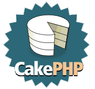

Django VS CakePHP
Stengsiuosi pateikti tik faktus. Kuris iš jų geresnis, spręsti kiekvienam asmeniškai.
Django |
CakePHP |
|---|---|
|  | |
Programavimo kalba |
|
Python |
PHP |
Pradžia |
|
2005 m. |
2005 m. |
Atviras kodas |
|
Taip, BSD Licencija |
Taip, MIT Licencija |
Pagalba per IRC |
|
|
#django @ Freenode ~700 dalyvių |
#cakephp @ Freenode ~100 dalyvių |
RoR klonas?¶
Django
Django laikosi populiariausių ir pasiteisinusių dizaino šablonų, tokių, kaip MVC, ORM ir panašiai, kurie taip pat naudojami RoR karkase, tačiau daugiau didesnių panašumų nėra.
CakePHP
CakePHP yra Ruby on Rails klonas perrašytas PHP kalba. Nors rašoma, kad CakePHP nėra RoR klonas, bet daugelis dalykų realizuota lygiai taip pat, kaip tai yra padaryta RoR.
Dokumentacija¶
Django
Puiki ir išsami dokumentacija, yra internetinė ir popierinė knyga.
CakePHP
Dokumentacija nėra išsami ir išbaigta, daugelyje vietų apie funkcijas užsimenama tik bendrais bruožais. Yra išleista knyga apie CakePHP.
Darbo vietos paruošimas¶
Django
Python dėka Django galima įkelti į izoliuotą aplinką, kur visas veiksmas vyks viename kataloge.
Django turi integruotą web serverį, kuris būtent skirtas programavimui, nereikia rūpintis Apache ar pan. konfigūravimu.
Django karkasas atskirtas nuo vystomo projekto. Naujas projektas sukuriamas
automatizuotai, komandos startproject pagalba.
Pasiruošti darbui užtenkat šių trijų komandų:
$ virtualenv sandbox && cd sandbox $ ./bin/pip django $ ./bin/django-admin.py startproject mysite
Be to, programavimo darbams automatizuoti galima naudoti paruoštą „Django Receptą“ su buildout įrankiais.
CakePHP
Web serveriu, duomenų baze ir kitais dalykais reikia pasirūpinti pačiam.
CakePHP paketas turi iš karto paruoštą projekto katalogą, tačiau galima
komandos bake project pagalba susikurti jį atskirai, panašiai, kaip tai daroma
su Django startproject komanda.
Susikonfigūravus LAMP serverį, toliau darbo vietos paruošimas vyksta taip:
$ wget "http://cakeforge.org/frs/download.php/745/" \
"cake_1.3.0-alpha.bz2/donation=complete" -O- \
| tar -xjf -
$ mv 1.3.0-alpha cakephp && cd cakephp
$ chown -R www-data app/tmp
Models¶
Django
Django laikosi KISS principo, todėl tai, kas aprašyta modeliuose, naudojama duomenų bazės lentelėms kurti, generuoti formoms (CakePHP Scaffolding), duomenų tikrinimui atlikit ir t.t.
from django.db import models class Post(models.Model): title = models.CharField(max_length=200) body = models.TextField() created = models.DateTimeField() modified = models.DateTimeField()
Django neriboja ir leidžia rašyti tiesiogines SQL užklausas, tiek susietas su modeliu, tiek nepriklausomas INSERT/UPDATE ar kitoms užklausoms.
CakePHP
CakePHP duomenų struktūra aprašoma tiesiogiai duomenų bazėje kuriant lenteles.
Modelis pagal pavadinimą arba useTable parametrą, susiejamas su duomenų
bazės lentele, iš kurios nuskaitomi visi laukai ir kiti duomenys.
<?php class Post extends AppModel { var $name = 'Post'; } ?>
CakePHP suteikia ribotas galimybes vykdyti tiesiogines SQL užklausas. Pateikiamas tik vienas query metodas modelyje. Tiesioginės SQL užklausos surišamos su modeliu ir vykdomas fetchAll metodas. Nepaisant to, veikia ir INSERT/UPDATE užklausos.
Views¶
Django
Django MVC trijulė vadinama kiek kitais pavadinimais, todėl Views Django atveju yra tiesiog Templates.
Django turi savo šablonų sistemą, turinčią paveldimumo galimybę, funkcionalius kintamuosius, filtrus ir taip vadinamas žymes, kurios atlieką visą dinaminio turinio kūrimo darbą.
Šablonuose naudojami blokai. Vienas šablonas gali paveldėti kitą šabloną, perrašant tik reikiamus blokus. Būtent toks šablonų paveldėjimo principas yra pagrindinis arkliukas konstruojant sudėtingas svetaines, kurios turi bendrą šabloną ir besikeičiančias tam tikras dalis. Štai kaip atrodo Django šablonas:
{% extends "base_generic.html" %} {% block title %}{{ section.title }}{% endblock %} {% block content %} <h1>{{ section.title }}</h1> {% for story in story_list %} <h2> <a href="{{ story.get_absolute_url }}"> {{ story.headline|upper }} </a> </h2> <p>{{ story.tease|truncatewords:"100" }}</p> {% endfor %} {% endblock %}
CakePHP
CakePHP Views dalis taip pat reiškia šablonus. Šablonai rašomi PHP kalba, kadangi PHP pati savaime turi visas šablonams būdingas funkcijas. Šablonų failai, nors ir parašyti PHP kalba, turi .ctp galūnę, kas reiškia „CakePHP Template“.
CakePHP šablonai turi pagalbines priemones, tokias, kaip Helpers ir Elements. Helpers yra paprasčiausios funkcijos, kurios padeda formuoti šabloną. Elements iš dalies galima sulyginti su Django Tags. CakePHP Elements atlieka pasikartojančių svetainės dalių išvedimą, tokiu pačiu tikslu naudojami ir Django Tags, tačiau jų panaudojimo spektras yra kur kas platesnis.
CakePHP šablonas atrodo taip:
<?php echo $section['title']; ?> <h1><?php echo $story->title; ?></h1> <?php foreach $story_list as $story ?> <h2> <a href="<?php echo $story->get_absolute_url(); ?>"> <?php echo strtoupper($story->headline); ?> </a> </h2> <p><?php echo $text->truncate($story->tease, 100); ?></p> <?php endforeach; ?>
Controllers¶
Django
Django kontroleriai vadinami Views kartu su adresacijos mechanizmu. Django Views yra paprasčiausios funkcijos, kurios nurodą ką ir kaip grąžinti. Tos funkcijos surišamos su adresacijos mechanizmu. Štai kaip kuriama adresacija:
from django.conf.urls.defaults import * urlpatterns = patterns('', (r'^articles/2003/$', 'news.views.special_case_2003'), (r'^articles/(\d{4})/$', 'news.views.year_archive'), (r'^articles/(\d{4})/(\d{2})/$', 'news.views.month_archive'), (r'^articles/(\d{4})/(\d{2})/(\d+)/$', 'news.views.article_detail'), )
Aprašant adresus naudojami Regexp, per kuriuos iš karto atliekamas perduodamų parametrų tikrinimas.
O štai kaip atrodo Views funkcija:
from django.shortcuts import render_to_response def my_view(request): template_vars = {"foo": "bar"} return render_to_response('myapp/index.html', template_vars, mimetype="application/xhtml+xml")
Su Django Views galima išvesti ne tik HTML turinį, bet ir paveiksliukus, dokumentus, PDF failus ir ką tik nori. Nėra jokių ribojimų, nėra jokio tiesioginio privalomo ryšio su šablonais ar panašiais. Su Django Views viskas programuotojo rankose.
CakePHP
Django paveldimumas įgyvendintas šablonų lygmenyje (žinoma niekas nedraudžia naudotis Python OOP), tuo tarpu CakePHP visa svetainės hierarchija ir tarpusavio ryšiai laikomi kontroleriuose. Manau ši vieta yra esminis skirtumas tarp Django ir CakePHP. Django užklausimai apdorojami atskiromis funkcijomis, perduodant informaciją šablonų hierarchijai, o CakePHP per tarpusavyje susijusių klasių hierarchiją į atskirus šablonų gabaliukus.
Nors CakePHP turi URL Routes, tačiau pagal nutylėjimą, adresai formuojami pagal konrolerio ir jo metodų pavadinimus. Štai, kaip atrodo CakePHP adresacijos mechanizmas:
<?php Router::connect('/', array( 'controller'=>'posts', 'action'=>'index', )); ?>
Štai, kaip atrodo CakePHP kontroleris:
<?php class RecipesController extends AppController { function view($id) { $this->set(array('foo' => 'bar')); $this->render('/myapp/index'); } } ?>
MVC pagalbinės priemonės¶
Django
Django rodiniai (Views) globaliai gali būti kontroliuojami middleware pagalba. Middleware yra paprasčiausia klasė, kurios metodai iškviečiami nurodytu užklausos vykdymo metu. Rodiniai dar gali būti dekoruojami Python dekoratoriais ir rašomi GenericWiews dažnai pasikartojančioms situacijoms.
Šablonų kalba pati savaime turi daug visokių pagalbinių funkcijų ir filtrų, kuriuos galima pavadinti „Helpers“, kas yra naudojama CakePHP. Modeliuose galima naudoti taip vadinamus „Managers“, kurių pagalba galima išplėsti vieno ar kelių modelių galimybes.
Be šių išvardintų pagalbinių priemonių, Django turi gan didelę vidinę biblioteką, visiems gyvenimo atvejams.
CakePHP
CakePHP Controllers, Models ir Views, atitinkamai naudoja Components, Behaviors ir Helpers, kurie išplečia MVC dalių funkcionalumą.
CakePHP taip pat turi gan nemažai vidinių pagalbinių priemonių dažnai pasitaikančioms situacijoms.
Moduliškumas¶
Django
Standartiškai, kiekvieną Django projektą sudaro eilė Django Apps, tai yra standartinė praktika ir būtent tai išreiškiamas moduliškumas.
CakePHP
CakePHP moduliškumas realizuotas Plugins pagalba ir jie veikia panašiai, kaip Django Apps tik dokumentacijoje.
Dviračio išradinėjimas¶
Django
Daugelis funkcijų realizuota standartinėmis Python priemonėmis, daugelis jų yra pernaudojamos. Nors Django siūlo savo duomenų bazės valdymo priemones, šablonų varikliuką, tačiau nėra jokio ribojimo naudoti kažką kitą.
Django turi savo šablonų varikliuką, tačiau to negalima pavadinti išradimu, dėl unikalių savybių, kurių dėka šablonų sistema labai gerai dera su visa sistema. Vienas iš unikalių dalykų yra šablonų
paveldimumas, ko neturi daugelis egzistuojančių šablonų varikliukų.
CakePHP
Kaip ir daugelis kitų PHP kalba rašytų bibliotekų, CakePHP taip pat daugelyje vietų bando apeiti PHP kalbos trūkumus. Vienas iš tokių apėjimo pavyzdžių – savitas modelių ar kontrolerių įtraukimas naudojant Model::Import() ir panašias funkcijas. Kita dalykas, kadangi PHP kalba, iki 5.3 versijos išleidimo neturėjo vardų erdvių, tai CakePHP daugelis programavimo elementų aprašomi kaip klasės, bandant išvengti funkcijų pavadinimų konflikto.
CakePHP nenaudoja standartinės PHP priemonės PDO, jungimuisi prie duomenų bazės. Užklausų siuntimui galima naudoti tik vienintelę Query() funkciją, kuri visą laiką vykdoma lyg jai būtų perduota SELECT tipo užklausa. Jokių kitų priemonių, bendravimui su duomenų baze, išskyrus Query ir CakePHP ORM nėra.
Daugelyje vietų, CakePHP siūlo tik savo priemones nesuteikiant galimybės realizuoti tam tikras vietas, kitaip, nei tai yra numatę CakePHP programuotojai.
Svetainių talpinimas (deployment)¶
Django
Django galima leisti per mod_wsgi, mod_python, FastCGI, SCGI arba AJP. Jei web serveris palaiko bent vieną iš šių technologijų, sėkmingai galėsite naudoti Django, kartu su juo.
Deja gan mažai svetainių talpinimo paslaugas teikiančių įmonių, siūlo Django aplikacijų talpinimą. Tačiau jei turite dedikuotą serverį, problemų nebus. Be to, jei reikalausite Django palaikymo, tikėtina, kad jį gausite.
Nesenai, Google paskelbė teiksianti nemokamą, svetainių talpinimų paslaugą „Google App Engine, kur svetainių kūrimui, pagal nutylėjimą naudojamas būtent Django.
CakePHP
Kadangi CakePHP parašytas PHP kalba, kuri palaikoma daugelio svetainių talpinimo paslaugas teikiančių įmonių, tai tikėtina, kad problemų nebus. Tai yra stiprioji CakePHP pusė.
Išvados¶
CakePHP turi griežtą struktūrą į kurią privalai įtilpti, iš dalies tai gerai, nes skatinamas vienodas ir tos pačios krypties programavimas, bet dažnai galima patekti į situaciją, negalima realizuoti vieno ar kito dalyko, ko nebuvo numatę CakePHP ir tenka galvoti visokius apėjimo variantus.
Jei esate PHP kalbos mėgėjas ir jus tenkina CakePHP rėmai, tuomet ši priemonė jums tiks kuo puikiausiai.
Django yra labai lankstus ir turintis mažai architektūrinių ribojimų. Darbą pradėti galite labai paprastai, vos apsirašę duomenų bazės struktūrą modeliuose, iš karto gausite pilnai veikiančią administravimo sąsają.
Jei esate programuotojas idealistas, Django jums puikiai tiks ir patiks.